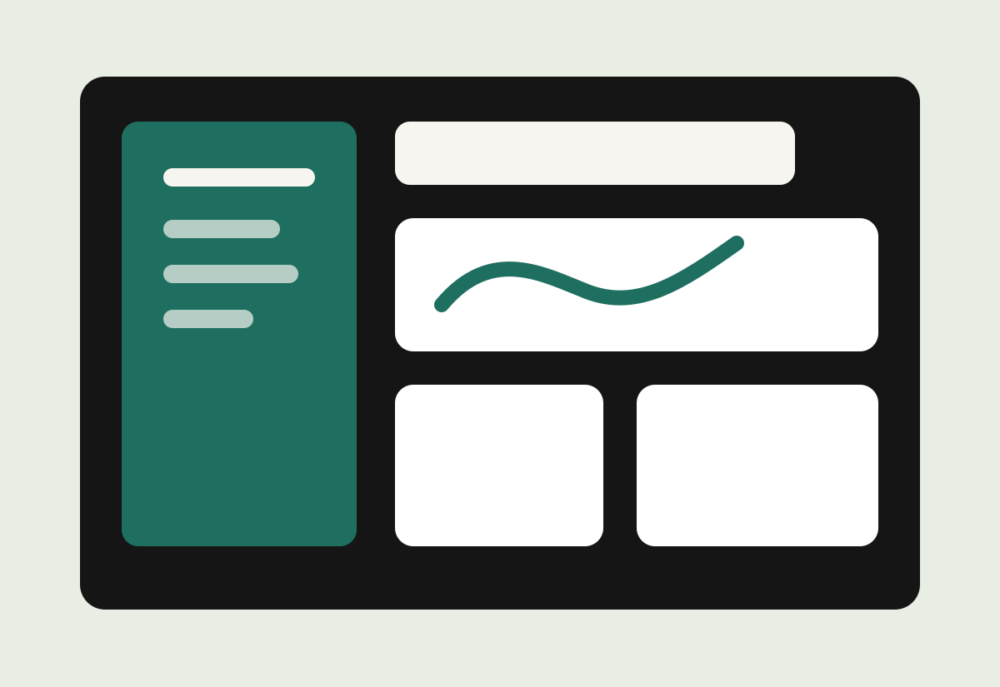
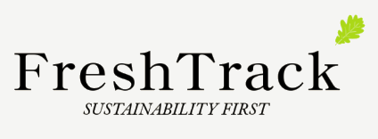

01

FreshTrack
FreshTrack is an app that allows you to track your foods expiry dates and generate recipes based on what goes out of date first. Unlike its competitors, it allows users to add items by taking one picture of their receipt, instead of adding each item manually. This was a group project in which I was in responsible for the receipt scanning & recipe generation workflow & the OpenAI API integration.